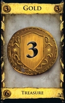

Game Guide
Goal
This is deck-building game. The deck is your Dominion. It contains your resources,
victory points, and the things you can do.
It starts out a small sad collection of Estates and Coppers,
but you hope by the end of the game it will be brimming with Gold, Provinces, and the inhabitants
and structures of your castle and kingdom.
The player with the most victory points in his Deck at game end wins
Preparation
There are 5 different kind of cards:
Treasure cards
There are 3 kinds of Treasure cards:

These are the basic Treasure cards and they are
available in every game.
Victory Cards
There are 3 kinds of Victory cards: Estate, Duchy and Province cards. These are the basic Victory cards and
they are available in every game.
Curse Cards
Curse cards are present in every game, however, they are rarely used in the basic game other than with the
Witch card.
Trash Cards
Trash cards are cards that the player has trashed, meaning the cards are no longer available to use in the
game.
Kingdom Cards
In addition to the Trash, Treasure, Victory and Curse cards that are used in every game, the players also
select 10 kingdom cards.
For the first game we recommend using the following 10 Kingdom cards: Cellar, Market, Militia, Mine, Moat,
Remodel, Smithy, Village, Woodcutter and Workshop
Playing the Game
Turn Overview
Each turn has three phases (A, B and C).
- Action phase: the player may play an Action.
- Buy phase: the player may buy a card.
- Clean-up phase: the player must discard both played and unplayed cards and draws five new cards.
After a player completes all three phases, his/her turn ends.
Action Phase
The player may play one action card if he has one. This is optional, even if the player has an action card,
he need not play it. Action cards will allow players to do extra things during their turns
As some action cards offer a player additional actions, a player may be able and choose to play several
action cards in a turn. The player will discard these cards in the clean-up phase. The Action phase ends
when the player cannot or chooses not to play any more Action cards.
Buy phase
The player can gain one card from the Supply by buying it - paying the cost shown on the card. The player
pays in coins from Treasure cards and from previously paid Action cards.
The player may use any combination of Treasure cards from his/her hand and coins shown on Action cards played
this turn.
Any Treasure cards played can be placed, adding them to any cards previously played this turn.
All these cards will be discarded at the end of the turn, and should not be discarded prior to the Clean-up
phase.
Clean-up phase
The player places all cards onto his/her Discard pile. This will include all Action cards and Treasure cards
he played during this turn. All cards left in the player's hand will also be placed onto the Discard
pile.
5 Cards are then drawn from the Deck and the turn ends.
Game End
The game ends at the end of any player's turn when either:
- The Supply pile of Province cards is empty
- Any 3 Supply piles are empty
The player with the most Victory points wins, ties go to the player with the fewest turns. If both players
have the same amount of Victory points and the same amount of turns played then both players win.